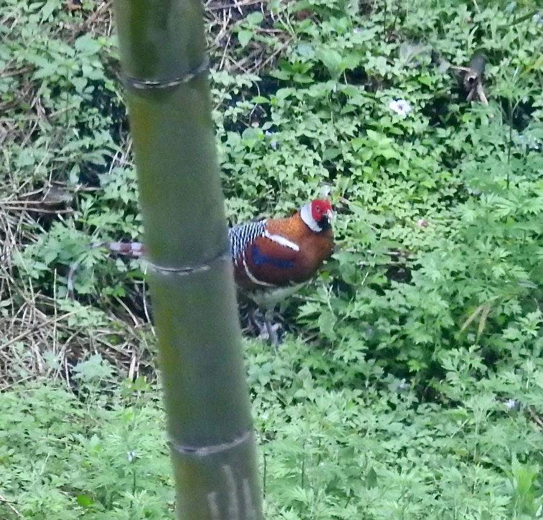

鸟类 · 动物界
白颈长尾雉 Syrmaticus ellioti

中国东南部山地森林特有的雉类，雄鸟颈白、背栗、尾羽修长带横斑，性机警善奔跑，因栖息地破碎与偷猎被列为易危。
- 分类
- 门脊索动物门纲鸟纲目鸡形目科雉科属长尾雉属
- 栖息环境
- 亚热带常绿阔叶林、针阔混交林下的灌丛与竹丛
- 地理分布
- 中国浙江、福建、江西、安徽南部、湖南、广东北部与广西东北部
- 保护级别
- IUCN 易危（VU）；中国国家一级保护动物；CITES 附录Ⅰ
物种志
白颈长尾雉体长雄鸟 80–90 厘米（含尾羽）、雌鸟约 50 厘米，体重 0.6–1.0 千克。雄鸟羽色华丽：头顶与颊部橄榄褐，颈侧与后颈白色形成宽阔的白色颈环，背与肩栗红，胸栗色，腹部白色，尾羽长而带黑栗相间的横斑；面部裸皮鲜红。雌鸟体色以橄榄褐与棕褐为主，具细密斑纹，尾较短，伪装性很强。
它们是中国东南部亚热带常绿阔叶林与混交林的特有雉类，栖息于海拔 300–1500 米的山地林下灌丛与竹丛，性机警，善奔跑而少飞行，遇险时多快步钻入密丛。食性以植物为主，取食嫩叶、芽、果实、种子，也吃昆虫与蜗牛。繁殖期在 3–5 月，在地面草丛中筑巢，每窝 5–8 枚卵，雌鸟孵卵约 24 天。由于森林被采伐和分割、非法猎捕以及栖息地质量下降，其野外种群持续减少，中国已建立多个保护区。
形态与习性
- 体长雄鸟含尾约 80–90 cm，雌鸟约 50 cm
- 体重约 0.6–1.0 kg
- 食性嫩叶、芽、果实、种子，兼食昆虫与蜗牛
- 繁殖3–5 月地面筑巢，每窝 5–8 枚卵，孵卵约 24 天
- 栖息海拔约 300–1500 m 的山地林下
- 识别特征雄鸟具宽阔白色颈环，背部栗红，尾羽带黑栗横斑
- 种群现状野外数量估计数千只，呈下降趋势
趣味知识
- 雄鸟脖子上有一圈醒目的白羽，像围了一条白围巾。
- 它受惊时通常不飞，而是低头快跑钻进竹丛，很难被发现。
- 白颈长尾雉是中国东南部山地森林的特有种，分布区十分有限。